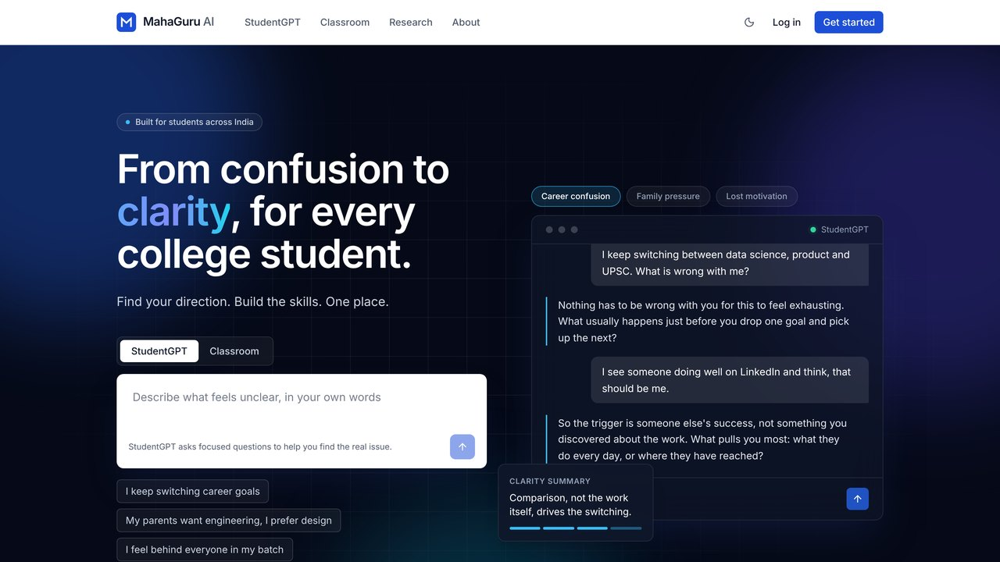

MahaGuru AI
Two products that hand off to each other. StudentGPT is a reflective mentor that asks before it advises. It runs a deterministic English and Hinglish safety screen on every message, keeps a structured understanding record, and retrieves reference dialogues with BM25. Classroom turns a goal into a diagnostic, a versioned roadmap, generated lessons with an AI teacher, quizzes, rubric-graded projects and mastery tracking that adapts the plan. Built as a FastAPI and React monorepo with streamed replies, guest-to-account sessions and a provider-agnostic LLM layer (Gemini by default). Shipped as one Docker image with CI on every push.
Hosted on Render’s free tier. The first load can take about a minute to wake up, and AI replies use a daily free quota.